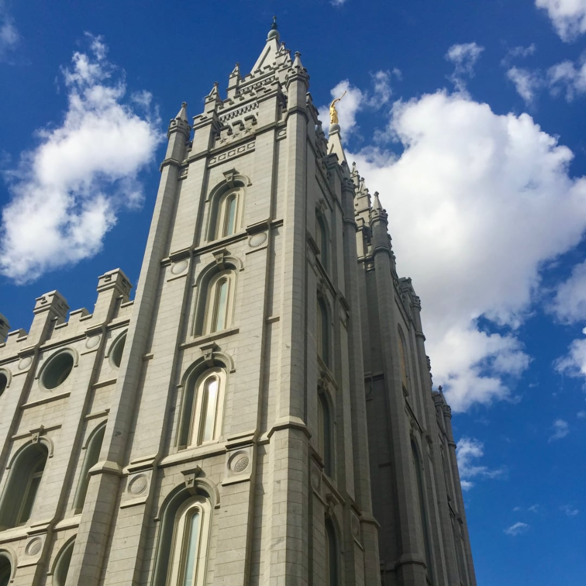

Why Temples?
“The Church, is not fully organized, in its proper order, and cannot
be, until the Temple is completed, where places will be provided for
the administration of the ordinances of the Priesthood.”
-Joseph
Smith Jr.
The Book of Mormon and Temples
The Book of Mormon can be a powerful tool for unlocking the symbolism and principles found in the Holy Temple, with its persistent themes of redemption, mercy, and the Atonement of Jesus Christ. The purpose of both the Book of Mormon and the temple ordinances are to draw us closer to the Savior, and they accomplish this best when paired together.
Symbolism and the Temple
“Without doubt, the temple is the great symbol of the Lord’s kingdom and our membership in it. But is also seems to me that the temple is the great symbol of the foreordained plan of salvation” (Andrew C. Skinner). Symbols, especially those found in the temple, are powerful reminders of God’s omniscience and love for us. Symbols allow Him to teach us line by line until we are able come to a perfect knowledge.